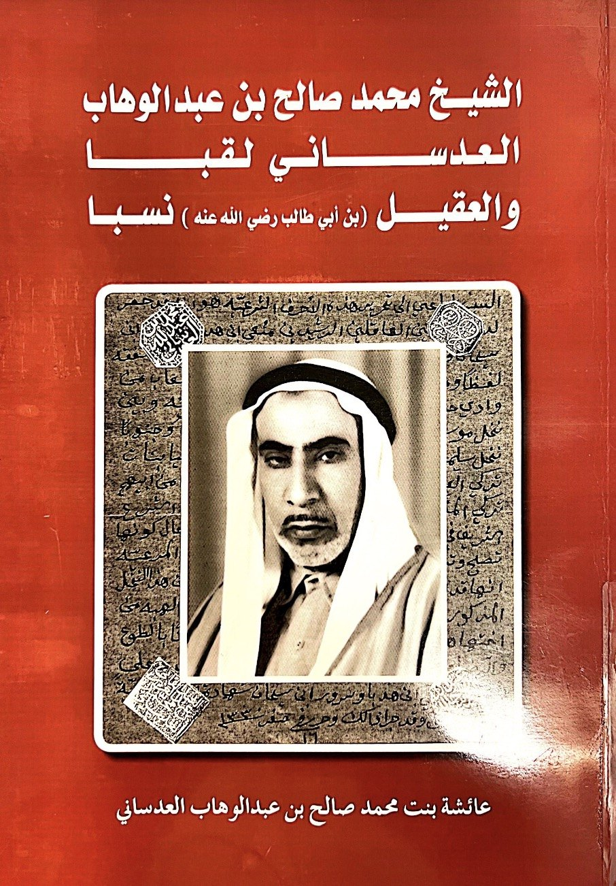

كتاب منشور · صفحات من كتاب عائشة بنت محمد صالح بن عبدالوهاب العدساني
الشيخ محمد صالح بن عبدالوهاب العدساني: رسم بدر عبدالوهاب القطامي لمعلمه
ما هي
سيرة المعلم والإمام الشيخ محمد صالح العدساني. وفي فصل «مكانته في المجتمع» تذكر المؤلفة أن أحد تلاميذه «المرحوم بدر القطامي» دفعه حبه ووفاؤه إلى تقديم رسم جميل لمدرسه، ثم وضعه ضمن مجموعة كبيرة من وجوه أبناء الكويت في كتابه «بورتريه القطامي» سنة ٢٠٠٦ (نقلا عن د. يعقوب الغنيم، جريدة الوطن، ٨ أبريل ٢٠٠٩). وتذكر الصفحتان ٨٢ و٨٣ تلاميذه، وفي الصفحة ٨٣ «السيد بدر القطامي» و«السيد محمد القطامي».
أهميتها
يوثق بدر القطامي رساما وصاحب كتاب «بورتريه القطامي» (٢٠٠٦).
من المقصود
تؤكد العائلة أن بدر ومحمد القطامي الوحيدين في ذلك الجيل هما بدر عبدالوهاب القطامي ومحمد عبدالعزيز القطامي.
صور الصفحات


ملاحظات
نعرض هنا الصفحات الأولى فقط، ويرى أفراد العائلة بعد تسجيل الدخول كل الصفحات وعددها 4.
أسماء أخرى
المصادر
عائشة بنت محمد صالح بن عبدالوهاب العدساني، الشيخ محمد صالح بن عبدالوهاب العدساني لقبا والعقيل نسبا، ص ٨٢ و٨٣ وفصل «مكانته في المجتمع»
كيف كُتب هذا النص: مصورة من الصفحات المطبوعة.
افتح في الموقع التفاعلي